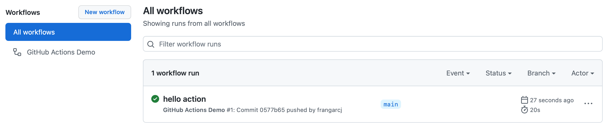
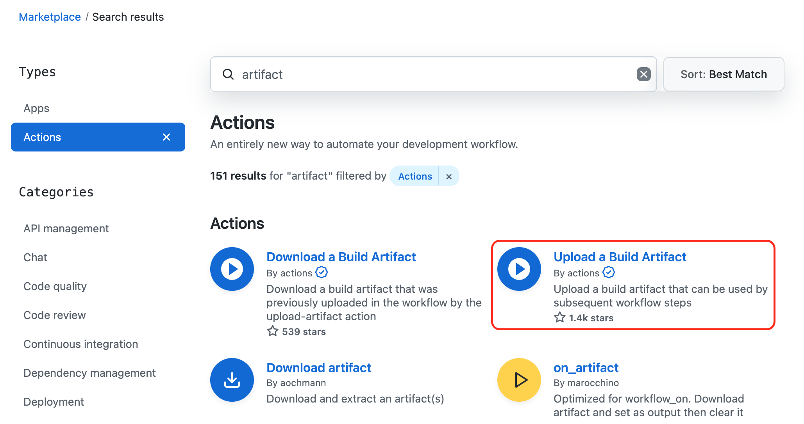

Computación en la Nube, Servicios y Aplicaciones. Joaquín Cañadas <jjcanada@ual.es>, Francisco García <paco.garcia@ual.es>
Version 0.22.2
-
Crear una infraestructura de CI/CD en GitHub mediante el uso de GitHub Actions
-
Diseñar flujos de trabajo para la construcción y despliegue automatizado de portales de documentación y aplicaciones NodeJs
Esta es la versión 0.22.2 de este documento.
Primeros pasos con GitHub Actions
-
Vamos a crear un repositorio vacio donde crear nuestro primer flujo de trabajo con GitHub Actions.
-
Después, con el repositorio con la documentación de la asignatura crearemos los primeros ejemplos de GitHub Actions que nos permitirán crear artefactos y desplegar la documentación en HTML en GitHub Pages.
Comenzando con GitHub Actions
-
Comenzar a crear flujos de trabajo (workflows) de GitHub Actions.
-
Probar un flujo de trabajo sencillo para familiarizarse con la plataforma.
Introducción a GitHub Actions
GitHub Actions es una plataforma de integración continua y despliegue continuo (CI/CD) que permite crear flujos de construcción, test y despliegue en GitHub. Estos flujos de trabajo permiten crear y probar cada solicitud de cambios en tu repositorio o desplegar solicitudes de cambios fusionadas a producción.
Sus principales características son:
-
Permite automatizar los flujos de trabajo proporcionando capacidades de CI/CD a GitHub.
-
Construye, prueba y despliega tu código directamente desde GitHub.
-
Permite integrar las revisiones de código, manejo de ramas, resolución de incidencias y creación de releases.
-
Permite descubrir, crear y compartir
actionspara ejecutar cualquier trabajo que quieras.
Creación del repositorio
Para empezar a trabajar con GitHub Actions solo necesitas un repositorio alojado en GitHub.
Para ello seguimos los siguientes pasos:
-
Al lado de nuestro avatar de usuario, pulsamos en
+ > New Repository
-
Creamos un repositorio llamado
hello-actionde tipo público.
|
Las GitHub Actions funcionan tanto con repositorios públicos como privados. Sin embargo, otras funciones como las GitHub Pages solo funcionan con los repositorios públicos. |
Creando tu primer workflow
A continuación, vamos a añadir un workflow que muestra las características esenciales de GitHub Actions.
Este ejemplo muestra como los trabajos de GitHub Actions pueden ser ejecutados automáticamente, donde corren y como interactuan con el código de tu repositorio.
-
Clona en tu equipo el repositorio creado anteriormente.
-
Crea un directorio
.github/workflows. -
En este directorio, crea un fichero llamado
github-actions-demo.yml. -
Copia el siguiente contenido YAML en el fichero anterior.
github-actions-demo.ymlname: GitHub Actions Demo (1) on: [push] (2) jobs: Explore-GitHub-Actions: (3) runs-on: ubuntu-latest (4) steps: - run: echo "üéâ The job was automatically triggered by a ${{ github.event_name }} event." (5) - run: echo "üêß This job is now running on a ${{ runner.os }} server hosted by GitHub!" - run: echo "üîé The name of your branch is ${{ github.ref }} and your repository is ${{ github.repository }}." - name: Check out repository code (6) uses: actions/checkout@v2 (7) - run: echo "üí° The ${{ github.repository }} repository has been cloned to the runner." - run: echo "üñ•Ô∏è The workflow is now ready to test your code on the runner." - name: List files in the repository run: | ls ${{ github.workspace }} - run: echo "üçè This job's status is ${{ job.status }}."1 Nombre del workflow. 2 Cuando se ejecuta el workflow. En este caso al hacer push en cualquier rama. 3 Nombre del trabajo. 4 Máquina donde se ejecuta el trabajo. 5 Comando de terminal bash. 6 Nombre del paso. 7 Reutilizaci√≥n de un actioncreada por otro usuario. En este caso es la que se utiliza para obtener el c√≥digo del repositorio. -
Hacemos
commitde los cambios y hacemospusha la rama remotagit add -A && git commit git push origin main
Comprobando el resultado
|
Es posible que la GitHub Actions no se ejecute instantaneamente y tarde un poco en aparecer. Los recursos son compartidos entre todos los usuarios de GitHub. |
-
En la página principal del repositorio, selecciona
Actionsen el menú principal -
En esta página podemos ver tanto el listado de workflows que tenemos en nuestro repositorio, como las ejecuciones de cada uno. Además podemos ver si ha habido éxito en la ejecución del workflow.
 -
Pulsamos en el nombre del commit (
hello actionen la imagen anterior) y accederemos a un resumen de la ejecución. En esta suelen aparecer las estadísticas de tiempo, los artefactos asociados y cada uno de los trabajos o jobs de nuestro workflow.
-
Pulsamos en el nombre del trabajo (
Explore-GitHub-Actionsen la imagen anterior) y vemos una descripción de cada una de los pasos o steps del trabajo.
-
Además podemos ver el log de ejecución de cada uno de los pasos.

Primer ejemplo: Documentación en Antora
Introducción a Antora
Antora permite gestionar la documentación de un proyecto como si fuera código. Esto significa que el proceso de documentación se beneficia de las mismas prácticas utilizadas para producir software con éxito.
Algunas de estas prácticas son:
-
Almacenar el contenido en un sistema de control de versiones.
-
Separar el contenido, la configuración y la presentación.
-
Aprovechar la automatización para la compilación, validación, verificación y publicación.
-
Reutilización de materiales compartidos (DRY).
Antora ayuda a incorporar estas prácticas en el flujo de trabajo de documentación. Como resultado, la documentación es mucho más fácil de gestionar, mantener y mejorar.
Creación del repositorio
Para empezar a trabajar solo necesitas un repositorio alojado en GitHub de tipo público.
|
Las GitHub Actions funcionan tanto con repositorios públicos como privados. Sin embargo, otras funciones como las GitHub Pages solo funcionan con los repositorios públicos. |
En este repositorio subiremos el contenido de un proyecto de documentación en Antora.
-
Descomprimimos el archivo en un directorio
-
Entramos al directorio y hacemos
git init -
Creamos la rama principal
git checkout -b main -
Hacemos commit de todos los archivos con
git add -A && git commit -
Añadimos el remote de nuestro repositorio
git remote add origin <dirección-repositorio> -
Subimos la rama local
git push origin main`
Nuestro repositorio tiene que tener la siguiente estructura:

Creando el workflow para Antora
A continuación, vamos a añadir un workflow que construya nuestro proyecto en Antora.
Al tratarse de un proyecto basado en NodeJS, utilizaremos una imagen Docker con éste instalado y seguiremos un proceso de construcción común a éste tipo de proyectos.
|
Para más información sobre la construcción de proyectos Antora https://docs.antora.org/antora/latest/install-and-run-quickstart/ |
-
Crea un directorio
.github/workflows. -
En este directorio, crea un fichero llamado
build.yml. -
Copia el siguiente contenido YAML en el fichero anterior.
build.ymlname: CI on: (1) push: branches: [ main ] pull_request: branches: [ main ] workflow_dispatch: (2) jobs: build: # The type of runner that the job will run on runs-on: ubuntu-latest container: node:16-alpine (3) steps: - uses: actions/checkout@v2 - name: Install dependencies (4) run: npm install - name: Build Antora project (5) run: | cp -R node_modules/@antora/lunr-extension/supplemental_ui/* supplemental-ui/ (6) npx antora local-antora-playbook.yml --fetch (7)1 Se ejecuta al hacer push en la rama main o un pull request con destino main. 2 Podemos lanzar el workflow cuando queramos. 3 Utilizamos una imagen Docker con NodeJS 16 instalado. 4 Instalamos las dependencias del proyecto NodeJS. 5 Construimos el proyecto Antora. 6 Paso extra necesario al utilizar la extensión @antora/lunr-extension 7 Comando para construir la documentación Antora a partir del playbook. -
Hacemos
commitde los cambios y hacemospusha la rama remotagit add -A && git commit git push origin main
Podemos comprobar que todo se ha realizado correctamente, viendo el resultado de la acción.
Descarga de los artefactos (artifacts)
Hemos conseguido configurar un workflow que permite compilar la documentación en Antora cada vez que se hace un pull request, un push a main o de forma manual.
Sin embargo, no tenemos acceso a la página web que se construye.
Si queremos asociar la documentación a cada ejecución tenemos que hacer uso de un action que suba artefactos (artifacts).
-
Vamos al GitHub Actions Marketplace
-
Buscamos la palabra
artifact. -
Seleccionamos
Upload a Build Artifactque es un action creado por GitHub.
-
Buscamos como utilizar la action en su documentación.

-
Modificamos nuestro flujo
build.yml`con un paso extra.build.yml... # Uploads the generated site - uses: actions/upload-artifact@v3 with: name: docs (1) path: docs/ (2)1 Nombre del fichero zip que descargaremos. 2 Carpeta con la documentación. Por defecto Antora usa el directorio docs
Tras hacer un push o una pull request, se ejecutará el workflow y podemos descargar la documentación en el zip del final de la página.

Despliegue en GitHub Pages
Es un servicio de GitHub que ermite publicar paÃÅginas en HTML estaÃÅtico o en Jekyll.
Además proporciona un dominio y url puÃÅblicas:
Podemos desplegar un sitio web mediante un directorio en el repositorio o con una rama especial (gh-pages).
Este servicio es usado normalmente para despliegue de frontends o portales de documentacioÃÅn de repositorios, como el caso que nos ocupa.
-
Vamos a utilizar el action
Deploy to GitHub Pages.
-
Leemos la documentación.
Si utilizamos un contenedor tenemos que tener instalado
gityrsyncpara usar esta action.- name: Install rsync and git run: | apt-get update && apt-get install -y rsync git # apk update && apk add rsync git - name: Deploy uses: JamesIves/github-pages-deploy-action@v4.2.5 -
Modificamos los pasos de nuestro flujo
build.ymlcomo primer y último pasobuild.ymlsteps: - name: Install git and rsync üìö run: | apk update && apk add git rsync ... - name: Deploy üöÄ uses: JamesIves/github-pages-deploy-action@v4.2.5 if: contains(github.ref,'refs/heads/main') (1) with: branch: gh-pages (2) folder: docs (3) clean: true (4)1 Solo se ejecuta si hacemos push a la rama main. Evitamos modificar la rama gh-pagesal construir una pull request.2 La rama donde vamos a desplegar. 3 La carpeta que queremos desplegar. 4 Si queremos limpiar la rama para evitar que ficheros no existentes se queden en la rama. -
Hacemos commit y subimos los cambios.
-
Una vez se ha ejecutado la acción, configuramos el soporte para GitHub Pages. Entramos en
Settings > Pagesy seleccionamos la ramagh-pagescomo origen.
-
En esta página podemos consultar la
urlde la documentación desplegada.
|
EJERCICIOS (Optativos)
|
Aplicación en NodeJS
Como construir y desplegar apliaciones web NodeJS con GitHub Actions
-
Definir un flujo de trabajo para automatizar las etapas más habituales en CI/CD
-
Desplegar la aplicación NodeJS tanto de forma nativa como mediante contenedor
Hola mundo en NodeJS
A continuación se muestra un ejemplo de integración y despliegue continuos en GitHub Actions de un proyecto NodeJS. Los pasos a realizar son similares a los ejemplos anterior con Jenkins pero adaptaremos las ordenes o comandos a la forma de trabajar de GitHub Actions.
Creación del repositorio
Para empezar a trabajar solo necesitas un repositorio alojado en GitHub de tipo público.
|
Las GitHub Actions funcionan tanto con repositorios públicos como privados. Sin embargo, otras funciones como las GitHub Pages solo funcionan con los repositorios públicos. |
En este repositorio subiremos el contenido de un proyecto HelloWorld en NodeJS.
-
Descomprimimos el archivo en un directorio
-
Entramos al directorio y hacemos
git init -
Creamos la rama principal
git checkout -b main -
Hacemos commit de todos los archivos con
git add -A && git commit -
Añadimos el remote de nuestro repositorio
git remote add origin <dirección-repositorio> -
Subimos la rama local
git push origin main`
Nuestro repositorio tiene que tener la siguiente estructura:
|
Comprueba que los archivos Fig. 1. Archivos y carpetas en el estado inicial
|
Creación del workflow en GitHub Actions
Creamos un nuevo workflow .github/workflows/build.yml
name: CI
on:
push:
branches: [ master ] (1)
pull_request:
branches: [ master ]
workflow_dispatch:
jobs:
build:
runs-on: ubuntu-latest
container: node:16-alpine
steps:
- uses: actions/checkout@v2
- name: Install dependencies
run: npm install
- name: Test
run: npm run test-jenkins (2)| 1 | El nombre de la rama master o main depende de cual es la rama principal. |
| 2 | Ejecuta los tests de igual forma a como los definimos para Jenkins. |
El resultado sera:

Sin embargo nos interesaría verlo de una forma más visual e integrado en el entorno de GitHub utilizando el action Test Reporter. Esta acción permite anotar las pull requests con un test en formato junit.
Editamos .github/workflows/build.yml y añadimos la acción para subir un artefacto con los resultados de los tests.
...
- uses: actions/upload-artifact@v2
if: success() || failure() (1)
with:
name: test-results (2)
path: ./coverage/test.results.xml (3)| 1 | Ejecutamos el paso independiente de los fallos. |
| 2 | Nombre del artefacto. |
| 3 | Ruta del resultado de los tests. |
Además añadimos otro flujo que anote la pull request llamado .github/workflows/tests.yml
name: 'Test Report'
on:
workflow_run:
workflows: ['CI'] (1)
types:
- completed
jobs:
report:
runs-on: ubuntu-latest (2)
steps:
- uses: dorny/test-reporter@v1
with:
artifact: test-results (3)
name: JEST Tests (4)
path: 'test.results.xml' (5)
reporter: jest-junit (6)| 1 | Se ejecuta cuando se completa el flujo llamado CI. |
| 2 | No hace falta contenedor. |
| 3 | Nombre del artefacto con los tests. |
| 4 | Nombre del check. |
| 5 | Nombre de los resultados dentro del zip. |
| 6 | Formato de los resultados. |
Subimos los cambios y podemos comprobar el resultado en los Checks.
Informe de cobertura
Como ya sabemos, la cobertura de código nos va a ofrecer un valor directamente relacionado con la calidad de los juegos de prueba. Para obtener la cobertura y publicarla en GitHub Actions, debemos hacer:
-
Utilizar un action que se encarge de la publicación de la cobertura como Jest Github Action.
-
Modificar el paso Test del flujo de GitHub Actions para que llame al script de cobertura y publique el informe de cobertura generado.
-
Modifica
.github/workflows/build.yml, cambiando el pasoTestpor la ejecución del action. -
Además pública todos los tests como artifact.
-
...
- name: Test
uses: mattallty/jest-github-action@v1
env:
GITHUB_TOKEN: ${{ secrets.GITHUB_TOKEN }}
with:
test-command: "npm run coverage-jenkins" (1)
...
- uses: actions/upload-artifact@v2
if: success() || failure()
with:
name: test-results
path: ./coverage/test.results.xml
path: |
./coverage/ (2)| 1 | Genera los tests de cobertura. |
| 2 | Subimos la carpeta completa. |
Podemos probar realizando un pull request de prueba.

Análisis estático de código
El código JavaScript es dinámicamente tipado, por lo que en lugar de usar el compilador para realizar el análisis estático de código, como ocurre en lenguajes como Java, las formas más comunes de análisis estático en JavaScript son formatters y linters.
-
Formatters o formateadores, escanean y reformatean rápidamente los archivos de código. Uno de los más populares es Prettier, que como cualquier buen formateador, corregirá automaticamente las inconsistencias que encuentre.
-
Linters pueden trabajar en aspectos de formato pero también otros problemas más complejos. Se basan en una serie de reglas para escanear el código, o descripciones de comportamientos a vigilar, y muestran todas las violaciones que encuentran. El más popular para JavaScript es ESLint.
Vamos a probar ESLint con Prettier en GitHub Actions con la action ESLint Annotate from Report JSON. Para utilizarla, vamos a añadir al package.json un script para lint en formato json
...
"scripts": {
...
"lint:json": "eslint src/**/*.js --format json -o coverage/eslint-result.json"
},
...En nuestro flujo .github/workflows/build.yml, añade dos nuevos pasos: uno en el que llames a lint:json y otro que ejecute la action para anotar el código.
...
- name: Save Code Linting Report JSON
run: npm run lint:json
continue-on-error: true (1)
- name: Annotate Code Linting Results
uses: ataylorme/eslint-annotate-action@1.2.0
with:
repo-token: "${{ secrets.GITHUB_TOKEN }}" (2)
report-json: "./coverage/eslint-result.json" (3)
...| 1 | Continua ejecutando el flujo aunque se produzca un error. |
| 2 | Esta action necesita un token para poder anotar el código. Esta disponible sin realizar más acciones. |
| 3 | Ruta del informe de ESLint. |
Podemos probar realizando un pull request de prueba y viendo el resultado en la pestaña Files Changed.
Despliegue en la VM
Para desplegar la aplicación hello world en la instancia de despliegue vamos a clonar el repositorio y a continuación ejecutaremos en ella la orden de Node para ponerla en marcha.
Recuerda que ya he hemos realizado una configuración previa sobre la instancia de despliegue, que constituyen los prerrequisitos para esta sección:
-
Con anterioridad ya instalamos NodeJS en la instancia de despliegue.
-
Tenemos creado un par de claves y hemos copiado la clave pública de despliegue al
authorized_keyspara que GitHub pueda ejecutar comandos sobre ella usando la clave privada. -
Como requisito adicional, para ayudarnos a lanzar
npm startdesde GitHub Actions, como un proceso demonio en background, usaremos forever. Debes instalarforeveren la instancia de despliegue:sudo npm install forever -g
Una vez revisados los prerrequisitos, vamos a configurar nuestro repositorio de GitHub para que pueda realizar el despliegue.
Añadir la clave privada a los secretos del repositorio.
-
Ve a tu repositorio en Github y entra en
Settings > Secrets. -
Crea un nuevo secreto con
New Repository Secret. Este secreto contiene dos cosas: un nombre y el valor. El nombre se utiliza para obtener el valor más tarde en un flujo de trabajo de Github Actions. -
Introduce como nombre
SSH_PRIVATE_KEY. -
Copia y pega el contenido de la clave privada como el valor.

Añadir la clave privada al flujo de trabajo de Github Actions
Ahora tenemos que añadir la clave privada a la máquina o contenedor de nuestro flujo de trabajo. Para simplificar el proceso podemos usar una action como Install SSH Key. Además, vamos a realizar el despliegue en un flujo nuevo .github/workflows/deploy.yml que solo se ejecute al hacer push sobre la rama principal.
name: Deploy
on:
push:
branches: [ master ]
workflow_dispatch:
jobs:
deploy:
runs-on: ubuntu-latest
steps:
- name: Install SSH Key
uses: shimataro/ssh-key-action@v2
with:
key: ${{ secrets.SSH_PRIVATE_KEY }} (1)
known_hosts: 'un-valor-para-que-no-de-error' (2)| 1 | Nombre del secreto con la clave privada. |
| 2 | Valor del known_hosts de la máquina a la que nos conectamos. Metemos un valor de ejemplo para calcularlo dinámicamente en pasos posteriores. |
Añadir un valor correcto de known_hosts
Vamos a guardar como secreto la IP o nombre de dominio de la máquina de despliegue con el nombre de SSH_HOST. Con este valor, vamos a añadir un paso que obtenga el known_hosts y lo escriba.
...
- name: Adding Known Hosts
run: ssh-keyscan -H ${{ secrets.SSH_HOST }} >> ~/.ssh/known_hostsAñadir el código de despliegue
De forma similar a como lo haciamos con Jenkins, vamos a añadir un último paso que realize el despliegue mediante ssh.
- name: Deploy
run: |
ssh ubuntu@${{ secrets.SSH_HOST }} "if [ ! -d 'nodeapp' ]; then \
git clone https://github.com/ualcnsa/nodeapp.git; \ (1)
else \
cd nodeapp && git stash && git fetch --all && git reset --hard origin/master && git pull origin master; \
fi"
ssh ubuntu@${{ secrets.SSH_HOST }} "if pgrep node; then forever stopall; fi"
ssh ubuntu@${{ secrets.SSH_HOST }} "cd nodeapp && npm install"
ssh ubuntu@${{ secrets.SSH_HOST }} "cd nodeapp && forever start src/main.js"| 1 | Nombre del repositorio a desplegar. |
|
Podemos acceder a la aplicación mediante el puerto 3000. Si no se puede acceder, habrá que abrirlo en la consola de Google Cloud. |

|
EJERCICIOS (Optativos)
|